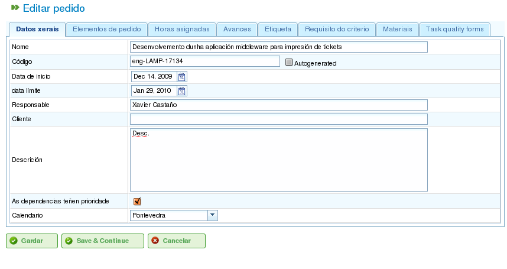

Projectes i elements de projecte
Contents
- Projectes
- Edició d'elements de comanda
- Edició d'informació sobre l'element de comanda
- Visualització d'hores atribuïdes als elements de comanda
- Gestió del progrés dels elements de comanda
- Gestió d'etiquetes de la comanda
- Gestió de criteris requerits per l'element de comanda i grups d'hores
- Gestió de materials
- Gestió de formularis de qualitat
Els projectes representen el treball a realitzar pels usuaris del programa. Cada projecte correspon a un projecte que l'empresa oferirà als seus clients.
Un projecte consta d'un o més elements de projecte. Cada element de projecte representa una part específica del treball a realitzar i defineix com s'ha de planificar i executar el treball del projecte. Els elements de projecte s'organitzen jeràrquicament, sense limitacions en la profunditat de la jerarquia. Aquesta estructura jeràrquica permet l'herència de determinades característiques, com ara les etiquetes.
Les seccions següents descriuen les operacions que els usuaris poden realitzar amb projectes i elements de projecte.
Projectes
Un projecte representa un projecte o treball sol·licitat per un client a l'empresa. El projecte identifica el projecte dins la planificació de l'empresa. A diferència dels programes de gestió integrals, LibrePlan només requereix certs detalls clau per a un projecte. Aquests detalls són:
- Nom del projecte: El nom del projecte.
- Codi del projecte: Un codi únic per al projecte.
- Import total del projecte: El valor econòmic total del projecte.
- Data d'inici estimada: La data d'inici planificada del projecte.
- Data de fi: La data de finalització planificada del projecte.
- Persona responsable: La persona responsable del projecte.
- Descripció: Una descripció del projecte.
- Calendari assignat: El calendari associat al projecte.
- Generació automàtica de codis: Un paràmetre per indicar al sistema que generi automàticament codis per als elements de projecte i grups d'hores.
- Preferència entre dependències i restriccions: Els usuaris poden triar si les dependències o les restriccions tenen prioritat en cas de conflicte.
No obstant això, un projecte complet també inclou altres entitats associades:
- Hores assignades al projecte: El total d'hores assignades al projecte.
- Progrés atribuït al projecte: El progrés realitzat al projecte.
- Etiquetes: Etiquetes assignades al projecte.
- Criteris assignats al projecte: Criteris associats al projecte.
- Materials: Materials necessaris per al projecte.
- Formularis de qualitat: Formularis de qualitat associats al projecte.
La creació o edició d'un projecte es pot fer des de diverses ubicacions dins del programa:
- Des de la "Llista de projectes" a la vista general de l'empresa:
- Editar: Feu clic al botó d'edició del projecte desitjat.
- Crear: Feu clic a "Nou projecte".
- Des d'un projecte al diagrama de Gantt: Canvieu a la vista de detalls del projecte.
Els usuaris poden accedir a les pestanyes següents en editar un projecte:
Editar detalls del projecte: Aquesta pantalla permet als usuaris editar els detalls bàsics del projecte:
- Nom
- Codi
- Data d'inici estimada
- Data de fi
- Persona responsable
- Client
- Descripció

Edició de projectes
Llista d'elements de projecte: Aquesta pantalla permet als usuaris realitzar diverses operacions sobre els elements de projecte:
- Crear nous elements de projecte.
- Promoure un element de projecte un nivell amunt a la jerarquia.
- Degradar un element de projecte un nivell avall a la jerarquia.
- Sagnar un element de projecte (moure'l avall a la jerarquia).
- Dessagnar un element de projecte (moure'l amunt a la jerarquia).
- Filtrar elements de projecte.
- Eliminar elements de projecte.
- Moure un element dins de la jerarquia arrossegant i deixant anar.

Llista d'elements de projecte
Hores assignades: Aquesta pantalla mostra el total d'hores atribuïdes al projecte, agrupant les hores introduïdes als elements de projecte.

Assignació d'hores atribuïdes a la comanda per treballadors
Progrés: Aquesta pantalla permet als usuaris assignar tipus de progrés i introduir mesures de progrés per a la comanda. Consulteu la secció "Progrés" per a més detalls.
Etiquetes: Aquesta pantalla permet als usuaris assignar etiquetes a una comanda i veure les etiquetes directes i indirectes prèviament assignades. Consulteu la secció sobre edició d'elements de comanda per a una descripció detallada de la gestió d'etiquetes.

Etiquetes de la comanda
Criteris: Aquesta pantalla permet als usuaris assignar criteris que s'aplicaran a totes les tasques dins de la comanda. Aquests criteris s'aplicaran automàticament a tots els elements de comanda, excepte els que hagin estat explícitament invalidats. Els grups d'hores dels elements de comanda, que s'agrupen per criteris, també es poden visualitzar, permetent als usuaris identificar els criteris necessaris per a una comanda.

Criteris de la comanda
Materials: Aquesta pantalla permet als usuaris assignar materials a les comandes. Els materials es poden seleccionar de les categories de materials disponibles al programa. Els materials es gestionen de la manera següent:
- Seleccioneu la pestanya "Cercar materials" a la part inferior de la pantalla.
- Introduïu text per cercar materials o seleccioneu les categories per a les quals voleu trobar materials.
- El sistema filtra els resultats.
- Seleccioneu els materials desitjats (es poden seleccionar múltiples materials prement la tecla "Ctrl").
- Feu clic a "Assignar".
- El sistema mostra la llista de materials ja assignats a la comanda.
- Seleccioneu les unitats i l'estat a assignar a la comanda.
- Feu clic a "Desa" o "Desa i continua".
- Per gestionar la recepció de materials, feu clic a "Dividir" per canviar l'estat d'una quantitat parcial de material.

Materials associats a una comanda
Qualitat: Els usuaris poden assignar un formulari de qualitat a la comanda. Aquest formulari es completa aleshores per garantir que certes activitats associades a la comanda s'han dut a terme. Consulteu la secció sobre edició d'elements de comanda per a detalls sobre la gestió de formularis de qualitat.

Formulari de qualitat associat a la comanda
Edició d'elements de comanda
Els elements de comanda s'editen des de la pestanya "Llista d'elements de comanda" fent clic a la icona d'edició. Això obre una nova pantalla on els usuaris poden:
- Editar informació sobre l'element de comanda.
- Veure les hores atribuïdes als elements de comanda.
- Gestionar el progrés dels elements de comanda.
- Gestionar les etiquetes de la comanda.
- Gestionar els criteris requerits per l'element de comanda.
- Gestionar materials.
- Gestionar formularis de qualitat.
Les subseccions següents descriuen cadascuna d'aquestes operacions en detall.
Edició d'informació sobre l'element de comanda
L'edició d'informació sobre l'element de comanda inclou la modificació dels detalls següents:
- Nom de l'element de comanda: El nom de l'element de comanda.
- Codi de l'element de comanda: Un codi únic per a l'element de comanda.
- Data d'inici: La data d'inici planificada de l'element de comanda.
- Data de fi estimada: La data de finalització planificada de l'element de comanda.
- Total d'hores: El total d'hores assignades a l'element de comanda. Aquestes hores es poden calcular a partir dels grups d'hores afegits o introduir-se directament. Si s'introdueixen directament, les hores s'han de distribuir entre els grups d'hores, i s'ha de crear un nou grup d'hores si els percentatges no coincideixen amb els percentatges inicials.
- Grups d'hores: Es poden afegir un o més grups d'hores a l'element de comanda. El propòsit d'aquests grups d'hores és definir els requisits per als recursos que s'assignaran per realitzar el treball.
- Criteris: Es poden afegir criteris que s'han de complir per habilitar l'assignació genèrica per a l'element de comanda.

Edició d'elements de comanda
Visualització d'hores atribuïdes als elements de comanda
La pestanya "Hores assignades" permet als usuaris veure els parts de treball associats a un element de comanda i veure quantes de les hores estimades ja s'han completat.

Hores assignades als elements de comanda
La pantalla es divideix en dues parts:
- Llista de parts de treball: Els usuaris poden veure la llista de parts de treball associats a l'element de comanda, incloent la data i l'hora, el recurs i el nombre d'hores dedicades a la tasca.
- Ús d'hores estimades: El sistema calcula el nombre total d'hores dedicades a la tasca i les compara amb les hores estimades.
Gestió del progrés dels elements de comanda
La introducció de tipus de progrés i la gestió del progrés dels elements de comanda es descriu al capítol "Progrés".
Gestió d'etiquetes de la comanda
Les etiquetes, tal com es descriu al capítol sobre etiquetes, permeten als usuaris categoritzar els elements de comanda. Això permet als usuaris agrupar informació de planificació o de comanda basant-se en aquestes etiquetes.
Els usuaris poden assignar etiquetes directament a un element de comanda o a un element de comanda de nivell superior a la jerarquia. Un cop s'assigna una etiqueta mitjançant qualsevol dels dos mètodes, l'element de comanda i la tasca de planificació relacionada s'associen a l'etiqueta i es poden utilitzar per a filtrats posteriors.

Assignació d'etiquetes per a elements de comanda
Tal com es mostra a la imatge, els usuaris poden realitzar les accions següents des de la pestanya Etiquetes:
- Veure etiquetes heretades: Veure les etiquetes associades a l'element de comanda que han estat heretades d'un element de comanda de nivell superior. La tasca de planificació associada a cada element de comanda té les mateixes etiquetes associades.
- Veure etiquetes assignades directament: Veure les etiquetes directament associades a l'element de comanda mitjançant el formulari d'assignació d'etiquetes de nivell inferior.
- Assignar etiquetes existents: Assignar etiquetes cercant-les entre les etiquetes disponibles al formulari que hi ha sota la llista d'etiquetes directes. Per cercar una etiqueta, feu clic a la icona de lupa o introduïu les primeres lletres de l'etiqueta al quadre de text per mostrar les opcions disponibles.
- Crear i assignar noves etiquetes: Crear noves etiquetes associades a un tipus d'etiqueta existent des d'aquest formulari. Per fer-ho, seleccioneu un tipus d'etiqueta i introduïu el valor de l'etiqueta per al tipus seleccionat. El sistema crea automàticament l'etiqueta i l'assigna a l'element de comanda en fer clic a "Crear i assignar".
Gestió de criteris requerits per l'element de comanda i grups d'hores
Tant una comanda com un element de comanda poden tenir criteris assignats que s'han de complir perquè es dugui a terme el treball. Els criteris poden ser directes o indirectes:
- Criteris directes: S'assignen directament a l'element de comanda. Són criteris requerits pels grups d'hores de l'element de comanda.
- Criteris indirectes: S'assignen a elements de comanda de nivell superior a la jerarquia i s'hereten per l'element que s'edita.
A més dels criteris requerits, es pot definir un o més grups d'hores que formen part de l'element de comanda. Això depèn de si l'element de comanda conté altres elements de comanda com a nodes fills o si és un node fulla. En el primer cas, la informació sobre les hores i els grups d'hores només es pot visualitzar. No obstant això, els nodes fulla es poden editar. Els nodes fulla funcionen de la manera següent:
- El sistema crea un grup d'hores per defecte associat a l'element de comanda. Els detalls que es poden modificar per a un grup d'hores són:
- Codi: El codi del grup d'hores (si no es genera automàticament).
- Tipus de criteri: Els usuaris poden triar assignar un criteri de màquina o de treballador.
- Nombre d'hores: El nombre d'hores del grup d'hores.
- Llista de criteris: Els criteris a aplicar al grup d'hores. Per afegir nous criteris, feu clic a "Afegir criteri" i seleccioneu-ne un del motor de cerca que apareix després de fer clic al botó.
- Els usuaris poden afegir nous grups d'hores amb característiques diferents dels grups d'hores anteriors. Per exemple, un element de comanda podria requerir un soldador (30 hores) i un pintor (40 hores).

Assignació de criteris a elements de comanda
Gestió de materials
Els materials es gestionen en projectes com una llista associada a cada element de comanda o a una comanda en general. La llista de materials inclou els camps següents:
- Codi: El codi del material.
- Data: La data associada al material.
- Unitats: El nombre d'unitats requerides.
- Tipus d'unitat: El tipus d'unitat utilitzat per mesurar el material.
- Preu unitari: El preu per unitat.
- Preu total: El preu total (calculat multiplicant el preu unitari pel nombre d'unitats).
- Categoria: La categoria a la qual pertany el material.
- Estat: L'estat del material (p. ex., Rebut, Sol·licitat, Pendent, En procés, Cancel·lat).
El treball amb materials es fa de la manera següent:
- Seleccioneu la pestanya "Materials" en un element de comanda.
- El sistema mostra dues subpestanyes: "Materials" i "Cercar materials".
- Si l'element de comanda no té materials assignats, la primera pestanya estarà buida.
- Feu clic a "Cercar materials" a la part inferior esquerra de la finestra.
- El sistema mostra la llista de categories disponibles i materials associats.

Cerca de materials
- Seleccioneu categories per refinar la cerca de materials.
- El sistema mostra els materials que pertanyen a les categories seleccionades.
- De la llista de materials, seleccioneu els materials a assignar a l'element de comanda.
- Feu clic a "Assignar".
- El sistema mostra la llista de materials seleccionats a la pestanya "Materials" amb nous camps a completar.

Assignació de materials a elements de comanda
- Seleccioneu les unitats, l'estat i la data per als materials assignats.
Per al seguiment posterior dels materials, és possible canviar l'estat d'un grup d'unitats del material rebut. Això es fa de la manera següent:
- Feu clic al botó "Dividir" a la llista de materials a la dreta de cada fila.
- Seleccioneu el nombre d'unitats en les quals dividir la fila.
- El programa mostra dues files amb el material dividit.
- Canvieu l'estat de la fila que conté el material.
L'avantatge d'utilitzar aquesta eina de divisió és la capacitat de rebre lliuraments parcials de material sense haver d'esperar el lliurament complet per marcar-lo com a rebut.
Gestió de formularis de qualitat
Alguns elements de comanda requereixen la certificació que certes tasques s'han completat abans que es puguin marcar com a completes. Per això el programa té formularis de qualitat, que consisteixen en una llista de preguntes que es consideren importants si es responen positivament.
És important tenir en compte que s'ha de crear prèviament un formulari de qualitat per poder assignar-lo a un element de comanda.
Per gestionar formularis de qualitat:
Aneu a la pestanya "Formularis de qualitat".

Assignació de formularis de qualitat a elements de comanda
El programa té un motor de cerca per a formularis de qualitat. Hi ha dos tipus de formularis de qualitat: per element o per percentatge.
- Element: Cada element és independent.
- Percentatge: Cada pregunta augmenta el progrés de l'element de comanda en un percentatge. Els percentatges han de poder sumar el 100%.
Seleccioneu un dels formularis creats a la interfície d'administració i feu clic a "Assignar".
El programa assigna el formulari escollit de la llista de formularis assignats a l'element de comanda.
Feu clic al botó "Editar" de l'element de comanda.
El programa mostra les preguntes del formulari de qualitat a la llista inferior.
Marqueu com a assolides les preguntes que s'han completat.
- Si el formulari de qualitat es basa en percentatges, les preguntes es responen en ordre.
- Si el formulari de qualitat es basa en elements, les preguntes es poden respondre en qualsevol ordre.